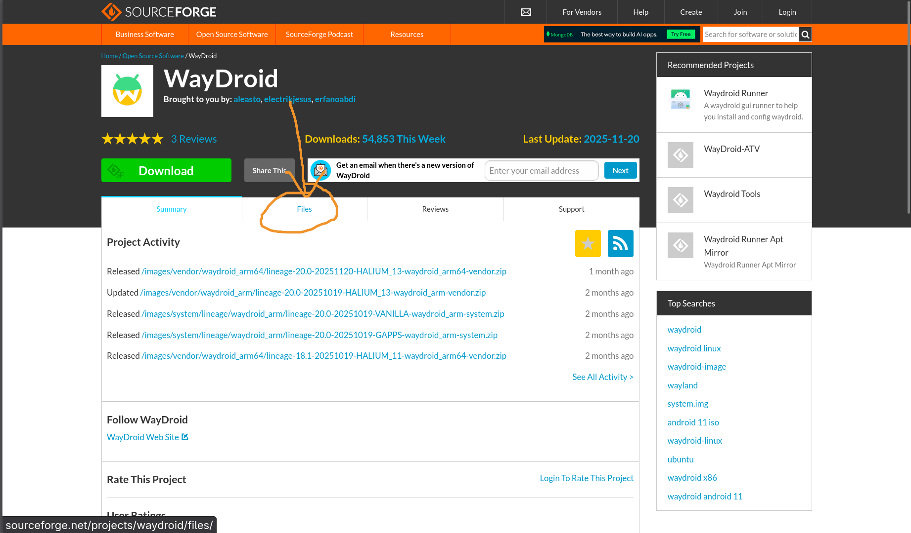
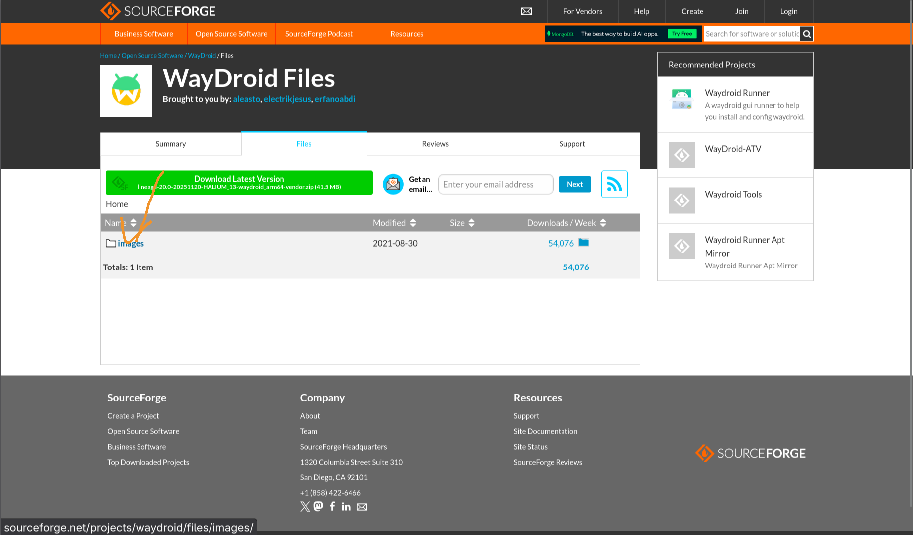
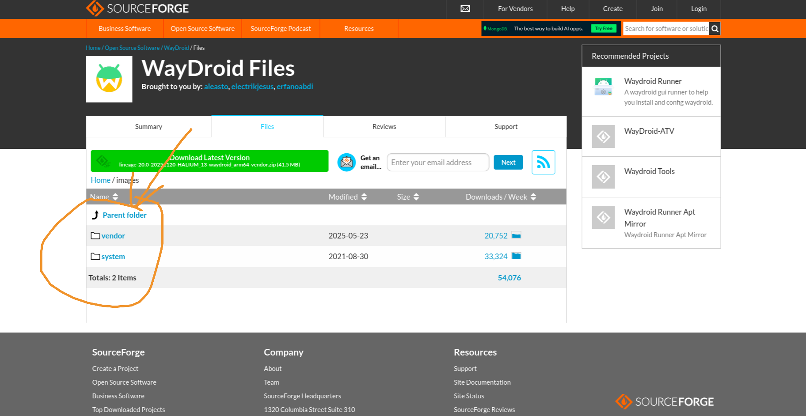

安装 Wadroid
桌面问题
Waydroid 只运行在 Wayland 中，确保你在使用它
内核问题
Waydroid 需要 binder 模块，一般默认就有，如果是自己编译的内核，请确保编译选项勾选该模块，或使用 DKMS 安装
性能优化
推荐在 AMD CPU上安装 libndk，Intel CPU上安装 libhoudini
安装 Waydroid
yay -S waydroid
其他发行版参考官方教程：https://docs.waydro.id/usage/install-on-desktops
初始化 Waydroid
# 普通初始化
sudo waydroid init
# 初始化支持 GApps 的 Waydroid
waydroid init -s GAPPS
# 启动并启用服务
systemctl enable --now waydroid-container
如果由于网络问题 sudo waydroid init 下载速度太慢，
可以自己在 sourceforge 上单独下载镜像



⚠注意 要同时下载system镜像和vendor镜像，放在/var/lib/waydroid/images下，并命名为system.img和vendor.img
使用 Waydroid
# 启动会话
waydroid session start
# 启动 GUI
waydroid show-full-ui
# 启动 Shell
sudo waydroid shell
# 安装应用
waydroid app install $path_to_apk
# 运行应用
waydroid app launch $package-name
# 获取应用列表
waydroid app list
# 开启应用独立窗口
# 在会话启动后运行
waydroid prop set persist.waydroid.multi_windows true
# 然后重启会话
waydroid session stop
waydroid session start
扩展脚本
这个项目：https://github.com/casualsnek/waydroid_script
可以用它安装谷歌全家桶以及安装Magisk获取root权限等
git clone https://github.com/casualsnek/waydroid_script
cd waydroid_script
python3 -m venv venv
venv/bin/pip install -r requirements.txt
sudo venv/bin/python3 main.py
💬 评论